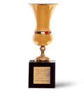
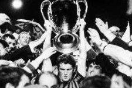

HISTOIRE DU MILAN AC
Premier club de la ville de Milan, les rossoneri sont l’équipe italienne la plus efficace sur le plan européen et seul le Real Madrid a fait mieux sur le continent. De nombreuses bandiere, plusieurs cycles incroyables, un club légendaire.
Palmares
 |
 |  |
|||||
1FIFA WORLD CUP |
3INTER COPPA |
7CHAMPIONS LEAGUE |
5SUPERCOPPA EUROPA |
2COPPA DELLE COPPE |
18CAMPIONATO ITALIANO |
5COPPA ITALIA |
7SUPERCOPPA DI LEGA |
1899 : LA FONDATION
C’est le 16 décembre 1899 que quelques Anglais et quelques Italiens se retrouvent à la Fiaschetteria Toscana, un bar de Milan, rue Berchet pour fonder un club de football. Ce sont surtout deux Anglais qui furent les véritables initiateurs. Plus précisément Alfred Edward et surtout Herbert Kilpin, le premier, vice-consul britannique à Milan fut le premier président, le deuxième fut le premier capitaine et entraîneur de ce qui s’appelait à l’époque le Milan Cricket and Football Club. Un mois plus tard, le club est affilié à la Fédération Italienne de Football, les couleurs du club seront le rouge et le noir à cause du jeu de maillots que Kilpin possédait, celui de son équipe préférée outre-Manche, ainsi naissent les rossoneri.
1900-1919 : PREMIERS SCUDETTI
Le Milan participe dès l’an 1900 au troisième championnat d’Italie de l’histoire lorsqu’il n’y avait que 5 participants mais se fait éliminer dès les demies. Le premier Scudetto ne tarde pas à arriver, en 1901, Milan est déjà sacré champion d’Italie un an et demi après sa création en battant la Juve en demies et le Genoa en finale (3-0, triplé de Kilpin), les rossoblù étaient triple champions en titre et gagneront les trois suivants ! Le Milan perd d’ailleurs en finale du championnat en 1902. Arrive ensuite un deuxième titre de champion d’Italie en 1906, lors du tour final à 3, le Milan et la Juventus se retrouvent égalité, il faut un match d’appui pour désigner le vainqueur, ce sera sur le terrain de la Juventus (meilleur différence de buts), 0-0, il faut un autre match, la fédération choisit le terrain “neutre”, de l’US Milanese, club de la ville de Milan naturellement, la vieille dame proteste et ne se présente pas, le Milan est donc sacré sans jouer.
1919-1946 : LA LONGUE TRAVERSÉE DU DÉSERT
Quand les compétitions sportives reprennent après guerre, le Milan a plutôt des prétentions revues vers le bas. Sous la présidence de Piero Pirelli (déjà aux commandes depuis 1909 et ce jusqu’en 1928), il ne passe rarement les phases de qualifications, parvenant seulement deux fois à accéder au tour final en 1927 et 1928 mais sans jamais être en mesure de disputer le Scudetto. La raison principale de cette non-compétitivité est une tendance à être trop traditionaliste et à refuser de recruter des étrangers et de se moderniser, le Milan aime conserver son côté amateur.
On peut signaler en revanche l’inauguration du stade San Siro en 1926 que le président Pirelli a fait construire et qui est alors le stade du Milan uniquement (l’Inter jouant à l’Arena Civica). Lorsque la Serie A actuelle fait son apparition en 1929, le Milan est en milieu de tableau, d’ailleurs durant les années 30 il ne fera pas mieux qu’une troisième place lors de la saison 1937/38 (mais aussi 1940/41), ainsi les seuls événements sont le changement du club qui devient Milan Associazione Sportiva en 1936 que les autorités fascistes de l’époque obligent à changer en Associazione Calcio Milano deux ans plus tard. Mais après-guerre, c’est le retour à Milan Associazione Sportiva, qui en sera le nom définitif.
1946-1961: SOUS LE SIGNE DU GRENOLI
Le championnat reprend après la Second Guerre mondiale, et le désormais Milan AC montre un autre visage, c’est à cette époque que l’on voit naître le premier grand Milan et le trio Gre-No-Li, ce trio de suédois composé de Gunnar Gren, Gunnar Nordahl et Nils Liedholm. Après plusieurs places d’honneur à la fin des années 40 derrière le grand Torino, puis la saison 1949/50 avec la victoire 7-1 sur la Juventus, cette dernière finissant tout de même championne et les 35 buts en une saison de Nordhal (record de la Serie A), Milan renoue avec le succès en 1951 avec son quatrième Scudetto et met fin à 44 ans de disette, un seul point séparera le Milan AC de l’Inter de Milan cette saison-là.
S’en suivent trois autres saisons sur le podium toujours emmené par les buts de Nordhal (qui en inscrira 225 au total, record du club), la Serie A est dominée par ses clubs historiques, la Juventus, l’Inter et le Milan AC donc qui renoue avec le succès lors de la saison 1954/55 en devançant l’Udinese (par la suite reléguée pour corruption) et en menant le championnat de bout en bout, outre le Grenoli, on retrouve Schiaffino, Lorenzo Buffon et aussi Cesare Maldini, cette victoire permet au Milan AC de participer à la première édition de la Coupe d’Europe des Clubs Champions, comme un symbole, son chemin s’arrêtera en demies contre le Real Madrid.
Deuxième de Serie A parallèlement (avec le 5ème et dernier titre de meilleur buteur de Serie A de Nordhal) derrière une irrésistible Fiorentina, le Milan AC reprend son bien et conquiert son 6ème Scudetto en mai 1957, ce qui signifie une nouvelle participation à la C1, Milan atteindra ce coup-ci la finale buttant une fois de plus contre le Real de Di Stefano et Gento, vainqueur 3-2. Dans le même temps, les rossoneri se classent seulement 9ème en championnat pour la saison 1957/58 et descendent du podium pour la première fois depuis 11 ans. Ce n’est que pour mieux rebondir, le Milan est champion de Serie A pour la saison 1958/59 grâce notamment à sa nouvelle recrue Altafini, Gipo Viani, l’entraîneur amène le Milan à une troisième et une deuxième place les saisons suivantes.
1961-1973 : LE CULTE DE L’EUROPE ET NEREO ROCCO
L’été 1961, un certain Nereo Rocco débarque à Milanello en provenance de Padova, il va tout de suite remporter le Scudetto lors de la saison 1961/62, le 8ème de l’histoire rossonera, dans la foulée, Milan participe bien sure à la Coupe d’Europe Champions, les rossoneri se retrouvent en finale contre le Benfica d’Eusebio, et un doublé d’Altafini offre la victoire au Milan, Cesare Maldini soulève la première Coupe des Champions pour un club italien et le Milan inaugure une tradition européenne qui s’avérera fructueuse. Rocco quitte lui temporairement le club pour aller au Toro, le Milan doit disputer la Coupe Intercontinentale, il perdra le match d’appui face au Santos de Pelé, peu après on apprendra que l’arbitre argentin de la rencontre Brozzi sera radié pour corruption à propos de ce match.
En l’absence de Rocco et avec le retour de Gipo Viani et les débuts de Nils Liedholm sur le banc, le Milan souffre et subit la domination de l’Inter et collectionne quelques places d’honneur perdant notamment le Scudetto en 1965 alors qu’il avait fait la course en tête longtemps, avec à un moment même, 7 points d’avance sur les cousins nerazzurri. Unique note positive la conquête de la première coupe d’Italie en 1967 face au Padova (1-0, but d’Amarildo). Un certain Gianni Rivera commence à s’illustrer depuis quelques temps et lorsque Rocco revient l’été 67, il en fait son homme phare, le Milan gagne son 9ème scudetto avec pas moins de 9 points d’avance sur le Napoli, c’est un doublé avec la Coupe des Coupes en battant Hambourg en finale (2-0, doublé d’Hamrin).
Saison 1968/69 et retour en Coupe d’Europe des Clubs Champions, après un joli parcours, Milan se retrouve en finale contre l’Ajax d’un Cruyff encore trop tendre qu’il étrillera 4-1 avec un triplé de Pierino Prati, c’est la deuxième C1 du club, le catenaccio de Rocco est plus que jamais efficace, cette année là, le Milan, deuxième du championnat ne concède que 2 buts à domicile (record égalé par Como en 1985). Six mois plus tard il s’agit de disputer la Coupe Intercontinentale, un vrai calvaire face aux Argentins de l’Estudiantes, Milan l’emporte 3-0 à l’aller, et perd 2-1 au retour pour ce qui sera une vraie chasse à l’homme de la part des autochtones, mais le trophée et ramené à la maison, le premier du club.
La fin de l’ère Rocco, c’est encore trois deuxièmes places consécutives en Serie A (de 71 à 73), celle de 1973 restera ans la mémoire et la “fatal Verona“, quand le Milan AC en tête à la dernière journée s’écroule 5-3 à l’Hellas, la Juve l’emporte et est sacrée championne. Les rossoneri se consoleront avec deux Coupes d’Italie (en 72 en battant Napoli, et en 73 face à la Juve aux penaltys) et une Coupe des Coupes face à Leeds, toujours en 1973 quelques jours avant la fatal Verona, une victoire 1-0 (but de Chiarugi) et un arbitrage largement pro-milanais (l’arbitre grec de la rencontre sera suspendu). En 12 saisons, Milan vient de remporter 10 trophées et s’est affirmé comme un club phare du vieux continent.
1973-1986 : LA LONGUE DESCENTE AUX ENFERS
Lors de la saison 1973/74, le départ de Rocco en cours de saison se fait ressentir, Gianni Rivera fait désormais office de taulier, cela commence par une dure défaite en Supercoupe d’Europe face à l’Ajax, victoire 1-0 à l’aller mais défaite 6-0 au retour ! Puis la finale perdue de la Coupe des Coupes face à Magdebourg 0-2. Sur le plan sociétaire, c’est également le chaos avec les présidents qui s’enchainent, saison 74-75, c’est une finale de Coupe d’Italie perdue face à la Fiorentina (2-3), jamais dans le coup en championnat (à part une troisième place en 75/76), l’année suivante belle victoire avec la 4ème Coupe d’Italie en tout juste 10 ans et ce face à l’Inter (2-0), cette saison Nereo Rocco dut revenir à la rescousse pour sauver le club relégable à 2 journées de la fin (10ème sur 16 au final).
Arrive alors Niels Liedholm sur le banc rossonero l’été 77, Milan mise désormais sur les jeunes, 4ème en 77/78 après avoir été en tête du championnat, c’est un inattendu Scudetto, le 10ème synonyme d’étoile d’or au dessus de l’écusson qui est conquis avec Rivera qui raccroche ainsi les crampons, mais surtout le jeune Baresi déjà titulaire à 18 ans, quand à Nereo Rocco, directeur technique, il décède quelques semaines avant la conquête de cette fameuse étoile qu’il a longtemps rêvé. De retour en Coupe des Champions et après une piètre élimination au stade des 16èmes, Milan termine 3ème mais se voit relégué administrativement, certains de ses joueurs et son président Colombo ainsi que d’autres clubs (Lazio, Bologna, Perugia, Avellino) arrangaient les matchs pour récupérer le gain des paris (affaire Totonero). C’est un drame, Milan va connaître la Serie B pour la première fois de son histoire.
Le Milan AC va vite remonter en étant sacré champion de Serie B en 1981, mais ce sera pour mieux redescendre, sportivement cette fois. Un deuxième titre de champion de Serie B s’en suivra, Franco Baresi est resté lors de ces deux relégations alors qu’il est un des meilleurs défenseurs du pays et champion du monde, il entrera ainsi définitivement dans le cœur des tifosi Milan. Revenu une nouvelle fois parmi l’élite pour jouer les seconds rôle pendant plusieurs saisons et n’atteint qu’une finale de coupe nationale perdue face à la Sampdoria, le retour de Liedholm n’y fera rien, financièrement c’est le chaos, le Milan AC risque de disparaître, au milieu de tout ça, Paolo Maldini fait ses premiers pas en janvier 1985 à 16 ans et demi.
1986-1991 : LES IMMORTELS
Le Milan AC est à un tournant de son histoire, en février 1986, Silvio Berlusconi riche entrepreneur milanais rachète le club et le sauve de la faillite, il veut en faire le meilleur du monde, il trouve dans cette équipe des joueurs comme Baresi, Tassoti, Maldini, Evani, Pippo Galli à partir desquels construire une grande équipe, laissant sa chance à un Niels Liedholm un peu vieillissant, les résultats sont insuffisants, il est remplacé pour quelques matchs au printemps 1987 par un certain Capello qui accroche la 5ème place en championnat, synonyme de Coupe de l’UEFA. L’été 87, Berlusconi fait appel à un illustre inconnu, Arrigo Sacchi, pour prendre les rênes de l’équipe. Il Mago di Fusignano arrive en provenance de Parma, club de Serie B et révolutionnera la tactique dans le football, Gullit et van Basten débarquent à Milanello ainsi qu’Ancelotti, les choses ne commencent pas très bien avec une élimination précoce en UEFA mais une fois que la machine est en marche rien ne l’arrêtera, le Milan AC rattrape le Napoli de Maradona et est sacré champion pour la 11ème fois de son histoire, c’est une équipe légendaire qui est en train de se construire.
Rijkaard rejoint ses compères à l’été 88, Milan fait son retour en Coupe d’Europe des Clubs Champions, détruit le Real Madrid en demi-finale (1-1 ; 5-0 !) et le Steaua Bucarest 4-0 en finale (doublés de van Basten et Gullit), 20 ans après son dernier sacre, c’est le retour sur le toit de l’Europe. La saison 89-90 sera grandiose, avec les mêmes joueurs, Milan se classe deuxième en championnat derrière Napoli dans des conditions pas bien claires (épisode Alemao, défaite chez l’Hellas (encore !) à cause d’un arbitrage irréel), perd la finale de la Coupe d’Italie face à la Juventus, mais se répète en Europe (1-0, Rijkaard face au Benfica pour le dernier “doublé” en C1 jusqu’à maintenant) et s’offre sa première Supercoupe d’Europe (1-1, 1-0 face au Barça) et retourne également sur le toit du monde en battant le Nacional Medellín en Coupe Intercontinentale grâce à un coup franc d’Evani à 3 minutes de la séance des tirs au but. Le quintuplé n’était pas loin.
La saison 90-91 est assez similaire à la précédente avec de nouveau la Supercoupe d’Europe (1-1 et 2-0 face à la Sampdoria) et la Coupe Intercontinentale (3-0 face à l’Olimpia Asunción), c’est la Sampdoria qui remportera le championnat (le Milan AC fera deuxième). Triste épisode en revanche en Coupe d’Europe, en quarts face à Marseille et le fameux épisode du projecteur défectueux, le Milan alors éliminé à ce moment du match décide de faire rentrer son équipe aux vestiaires, l’UEFA sera intraitable, un an de suspension de Coupe d’Europe, Sacchi quitte le club après 4 années fantastiques pour guider la Nazionale.
1991-1996 : LES INVINCIBLES
Il Mago di Fusignano laisse sa place à Capello en 1991, accueilli au milieu du scepticisme le plus complet, car à sa première vraie expérience sur un banc, se reposant sur la génération Sacchi et en y ajoutant les Slaves Boban et Savićević, ainsi que Papin, le Milan continue de gagner et avec la manière, le Scudetto saison 91-92 sans perdre le moindre match, un record jamais égalé, van Basten plante 25 buts et est au sommet de son art, une seule défaite cette saison-là (en Coupe face à la Juve 0-1). La saison suivante est triomphante, Milan est proprement imbattable, remporte la Supercoupe d’Italie (2-0) contre Parma, ces mêmes parmesans qui s’imposent à San Siro en mars 93 signant la première défaite rossonera après 58 rencontres de championnat ! En ce qui concerne la nouvelle Ligue des Champions, Milan gagne 10 matchs sur 10 (23 buts pour, 1 seul contre) et atteint la finale face à Marseille, sa bête noire qui gagnera 1-0, en championnat les rossoneri conservent leur titre.
Une nouvelle Supercoupe d’Italie (1-0 contre le Toro), le Milan AC est convié à disputer en lieu et place de l’OM la Supercoupe d’Europe et l’Intercontinentale, qu’elle perdra tous deux (contre Parma et São Paulo), cette saison-là (93/94), en Champions League, le Milan AC atteint de nouveau la finale pour une soirée légendaire face au présomptueux Cruyff et son armada du Barça, une victoire 4-0 (et deux poteaux !) avec un doublé de Massaro, un lob de Savićević et Desailly pour conclure le tout, un 3ème Scudetto consécutif est également conquis, c’est le doublé ! Le Milan de Capello est au sommet de son art.
La saison 1994/95 c’est la Juve qui est sacré championne d’Italie, Milan fait 3ème et s’incline face au Vélez en Intercontinentale (mais remporte la Supercoupe face à Arsenal), c’est une 3ème finale de Champions League consécutive, perdue face à l’Ajax à 3 minutes de la fin du match. George Weah débarque l’été 95, le temps pour Capello de conquérir un 4ème scudetto en 5 ans (le 15ème pour le Milan AC) et le Milan clôt là, à l’aube de l’arrêt Bosman, la meilleure période de son histoire, avec 17 trophées conquis en 8 ans !
1996-2001 : L’ÉGAREMENT
Les années qui suivirent furent moins glorieuses, libéralisation du marché des transferts, effectif en surcharge, joueurs surcotés, Milan tombe dans le piège et se dénature, on voit passer beaucoup de monde du côté de Milanello. D’abord un entraîneur uruguayen Tabárez, pas à la hauteur, ainsi que des joueurs arrivés à la va vite (Reiziger, Dugarry, Blomqvist), Berlusconi rappelle même Arrigo Sacchi mais son retour sera un vrai flop, son message ne passe plus. Milan termine 11ème, perd la Supercoupe d’Italie face à la Fiorentina et sort prématurément en Champions, Franco Baresi prend sa retraite après 20 ans, son numéro 6 est même retiré. La saison 97-98 marque le retour de Capello qui a entre-temps gagné une Liga avec le Real, nouveau mercato loupé, nouvelle saison négative, une 10ème place, une finale de Coupe d’Italie perdue face à la Lazio, c’est un échec.
Le Milan AC doit donc manger son pain noir mais Zaccheroni débarque de l’Udinese l’été 98 avec Bierhoff dans ses valises, loin de la Lazio en championnat, 7 victoires en fin de championnat vont permettre aux rossoneri d’accrocher un Scudetto inespéré ! Seulement, pas de nouveau cycle, résultats moyens en Champions League malgré l’achat de Shevchenko, Zaccheroni limogé, juste le temps de battre l’Inter 6-0 lors d’un derby historique avec Maldini et Tassotti sur le banc en mai 2001, l’été suivant arrive le Turc Fatih Terim qui restera quelques mois avant un retour aux traditions.
2001-2008 : GÉNÉRATION ANCELOTTI
En novembre 2001, Carletto Ancelotti fait son retour au club, qu’il qualifiera de justesse pour la Champions. Lors de l’été 2002, Nesta rejoint Inzaghi, Rui Costa et Pirlo. Costacurta et Maldini sont les seuls rescapés de la génération Sacchi, un autre cycle va commencer, en Champions League c’est un triomphe. Après une campagne de 19 matchs et avoir éliminé l’Inter en demies, Milan est sacré pour la 6ème fois champion d’Europe en battant la Juventus en finale aux tirs au but, c’est un doublé avec la première Coupe d’Italie de l’ère Berlsuconi face à la Roma (en championnat, Milan finit 3ème), une défaite en Supercoupe d’Italie (aux penaltys… face à la Juve) et une Supercoupe d’Europe (1-0 Shevchenko contre Porto), le Milan voit arriver le jeune brésilien Kaká, en duo avec Shevchenko, ils vont dominer le championnat, Sheva est meilleur buteur (24 réalisations), Milan champion pour la 17ème fois, dur élimination en revanche en Champions (face au Deportivo en quarts).
Les deux saisons suivantes, le Milan AC ne va rien gagner à part la Supercoupe d’Italie 2004 face à la Lazio (3-0, triplé de Sheva au sommet de son art), mais ne sera jamais bien loin, deux fois deuxièmes en championnat derrière la Juventus de Capello, une traumatisante finale de Champions League perdue aux tirs au but face à Liverpool (3-0 à la mi-temps, égalisation des Reds en 6 minutes). Le calciopoli frappe et le Milan est pénalisé en championnat (qu’il commencera à – 8 points), mais ceci va souder les rossoneri, qui en partant des préliminaires vont aller conquérir une 7ème Champions League, en battant Liverpool en finale (doublé d’Inzaghi) pour une incroyable revanche sur le destin. Dès lors, malgré une Supercoupe d’Europe (3-1 contre Séville) et un Mondial des Clubs (4-2 au Boca en finale), c’est la lente décadence du Milan AC, quelques transferts loupés et être toujours très loin de l’Inter en championnat, finissant même 5ème en 2008 et donc non qualifié en Champions. C’est la fin d’une génération, Kaká est vendu au Real, Ancelotti part à Chelsea après presque huit ans sur le banc et Maldini prend sa retraite après 25 ans d’une légendaire carrière.